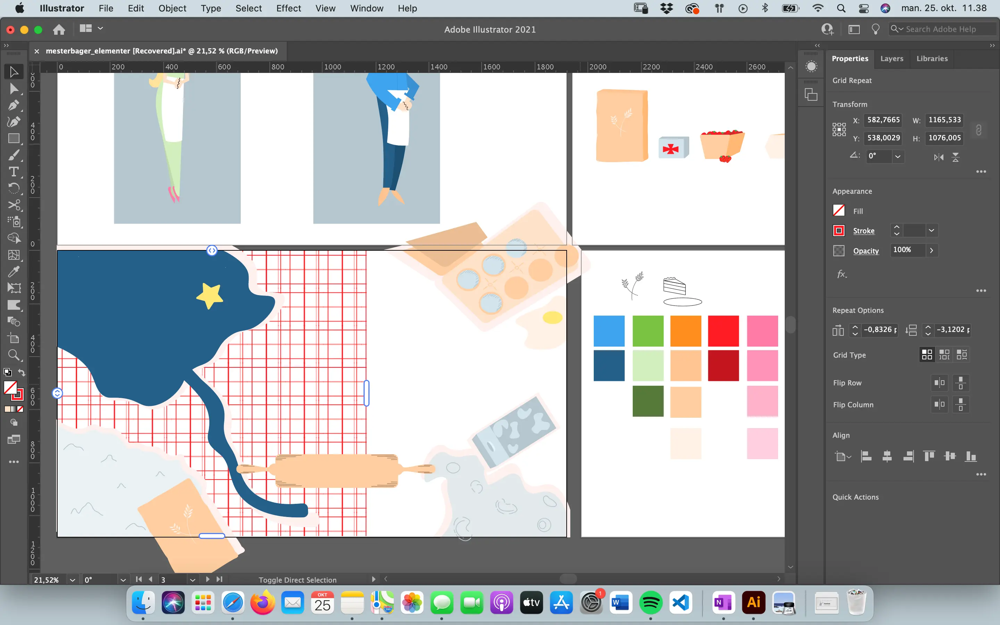

Oplæggene om karakter- og spildesign var spændende, og fik mig til at
overveje hvad der ville fungere for mig. Hvordan kunne jeg
implementere koncepter som:
atmosfærisk perspektiv, rule of thirds, asymmetri og
solid drawing i mit eget.
Jeg lærte også, at mit spil gerne må have en baggrund, og en forgrund
for at skabe dybde. Dog skulle jeg være forsigtig med, at dette ikke
tog for meget fokus fra selve spillet.
Særligt ønskede jeg, at holde mig til pastel farver, da også Den Store
Bagedyst benytter disse i sit visuelle udtryk.
Det var vigtigt ikke at gøre spillet for farligt, og derfor
midtercentrerede jeg min spilskærm, og undgik for mange skæve linjer.
Det var hele tiden en balance mellem, at holde den stil jeg havde
valgt – og blande den med virkeligheden, for at holde brugeren i den
fortælling jeg ønskede.

Min designinspiration, fandt jeg i Dexters Laboratorium. Jeg kan godt
lide måden de udformer karaktererne; spidse og næsten ”kiki” i deres
udtryk, men stadig ufjendtlige, grundet de bløde farver. Figurerne er
asymmetriske, og benytter solid drawing, hvilket holder dem livlige og
spændende for øjet.
Vha. moodboard hvor jeg blandede billeder af de to inspirationer, kom
jeg frem til et godt udtryk.
Jeg benyttede mig af atmosfærisk perspektiv, idet min baggrund var
kold og blå, mens klikbare elementer var varmere. Mine karakterer blev
asymmetriske som jeg ønskede, og havde et snert af solid drawing.
Klikbare elementer fik også en dybde, men jeg holdte dem i samme
farvetone – for at holde den lidt urealistiske farvepalette fra
tegnefilmen. Min tone of voice var opfordrende, men ikke dramatisk.
Ifb. med kodningen af spillet – blev vi introduceret for state machine
diagrammer. Disse laves ud fra UML-standard hvor faste figurer betyder
faste ting. Diagrammet var nyttigt, når jeg kodede i JavaScript. Det
hjalp med at holde overblik over mine funktioner. Hver function skulle
bestå af mange selectors og ordrer, f.eks.
classList.add(””) eller events som (”click”, ..);, og
derfor var det godt at have papiret ved siden af til hjælp.
Jeg udvalgte funktioner der passede til mit spil, og prøvede disse af.
Jeg brugte hele tiden console.log til at se, om jeg havde lavet en
fejl.
Det fungerede ikke med random speed for mig, men til gengæld tilføjede
jeg en random position, til at skifte spilelementernes position efter
klik.
Efter tests, erfarede jeg også at jeg havde alt for mange klikbare
elementer i mit spil – og reducerede derfor på disse. Det gav en langt
bedre brugeroplevelse.

Til slut lavede jeg et dokumentationssite, som opsummerede min proces,
og viste mine assets og spilbaggrunde i en lang liste.
Igen kunne jeg trække på gamle erfaringer om, at man ikke kan få nok
dokumentation.